松本城に行ってきたった
執筆日時：
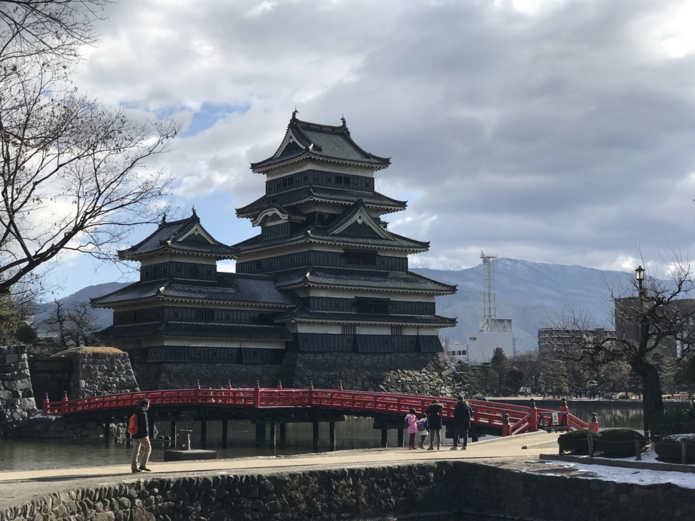
先月の話になるけれど、友人二人とクルマで松本城へ行ってきた。これでまた現存天守閣制覇に一歩近づいたゼ。
- 弘前城（遠いなぁ！）
- 松本城 ← NEW!
- 丸岡城（どこにあるんやっけ……）
- 犬山城（小さい頃なら行ったことがあるようなないような）
- 彦根城（みたことはある(＾ω＾)）
- 姫路城：岡山から少し足を延ばして姫路城へ - だるろぐ
- 松江城（今年中に行きたい）
- 備中松山城（バイクで行けんことない距離かな？）
- 丸亀城：半年前にフラリと丸亀に行った話（3）～丸亀城の石垣、高過ぎ - だるろぐ
- 松山城：地元！
- 宇和島城：宇和島城に登ったった（2年ぶり2回目） / 宇和島“あじ飯”を食べた / 四国新幹線を探して - だるろぐ
- 高知城：高知へ行ってきたった - だるろぐ
なんだかんだでまだ6つしか訪れてないのか……まだまだ先は長いな。とりあえず今年中に西日本の現存天守閣は制覇したいかも。
さて、松本城は国宝四城の一つで、現存天守閣のなかでは唯一の平城です。つまり、高知城みたいに泣きながら山に登らなくても天守閣を拝むことができる。おっさんに優しい城やな。まぁ、それは置いておいても、低い位置にあるのは迫力があっていい。その点は姫路城よりも恵まれているかも。だいたい、松山城みたいに山の上にポツンとあると、インパクトが薄いのよね（車窓から見える丸亀城なんかはまだいいんだけど）。近くまで登れば「おぉー」って感じの迫力なんだけど、問答無用で「どやっ！」と迫ってくる感じがないのがちょっと物足りないかも。
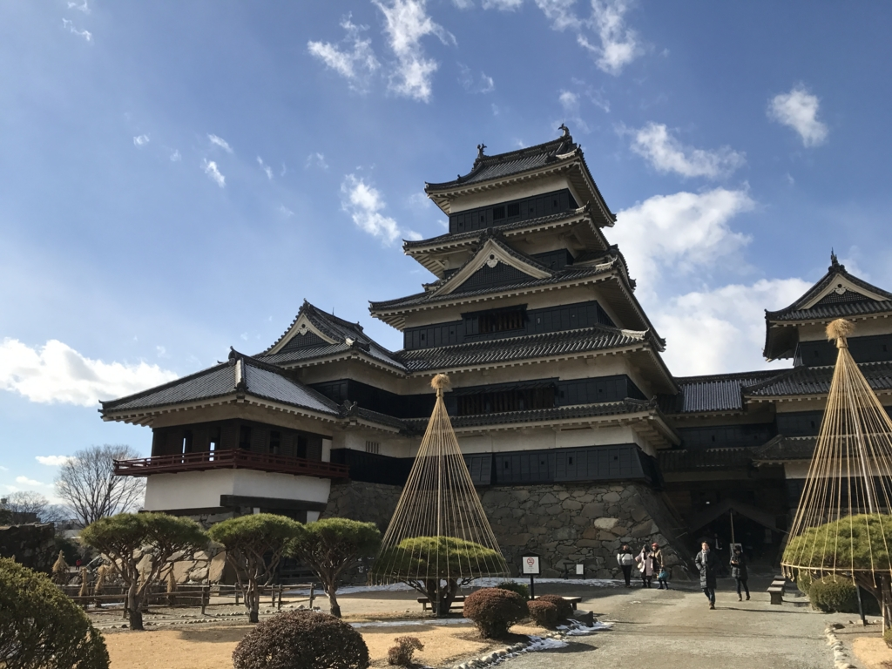
松本城はもともと“深志城”と呼ばれていました。元々は信濃守護・小笠原氏の城でしたが、武田信玄の信濃侵攻で奪われ、その後は武田四天王の一人・馬場信春が詰めていました。武田氏の没落後は徳川氏の麾下に入っていた小笠原氏一派が回復しますが、徳川氏の関東移封に伴い下総古河へ転出。あとに石川数正が入り、城郭・城下町の整備を行ったようです。大久保長安事件で石川氏が改易されたあとは、信州の要衝として譜代大名が入れ替わりで治めました。
別名は「烏（からす）城」。バシッと黒くシマった天守閣にピッタリの異名だな。関係ないけど、前に行った岡山城（あれ？ ブログに書いてない……国際だるやなぎ会議、無事に終わりました！ - だるろぐ の帰りに行ったんだよ）のあだ名も「烏城」だけど、こっちは読み方が「うじょう」だった。岡山城の天守閣も黒くてカッコいいです。
あと、天守閣をめぐる遊歩道のすぐそばまでヒタヒタと水をたたえるお堀もなかなかいい感じ。
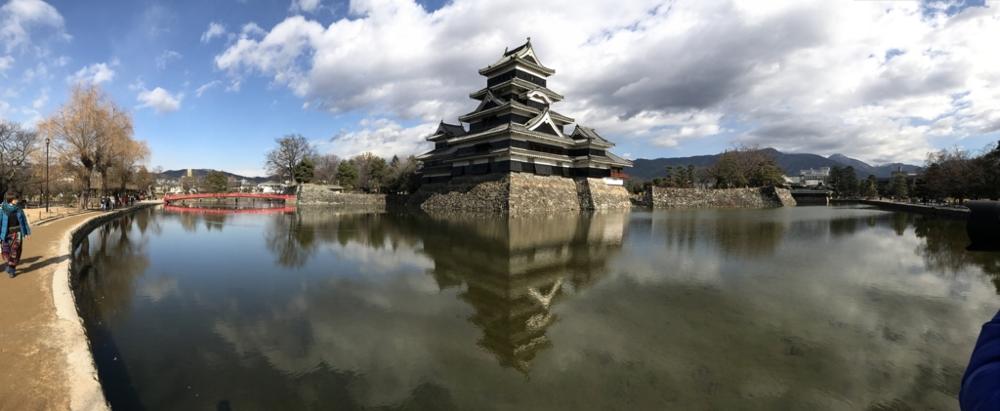
天気がよければ天守閣がお堀に映ってキレイです。でも、このお堀、一時期は落ち葉と魚のフンでだいぶ臭かったのだとか。浚渫したおかげか、僕が行ったときにはそんなことはまったくなかったのですが……メンテナンス大変すな。
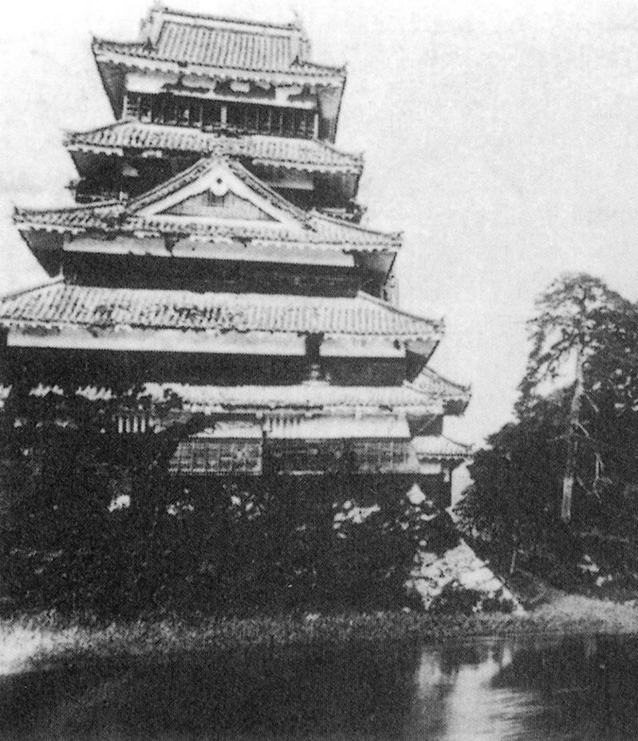
そうそう、メンテナンスといえば……明治時代は放置されていて荒れ放題だったのだそうな。これはどこの天守閣もそうだったみたいで、高松城などはそのまま取り壊されちゃっています（高松城へ行ってきたった。 - だるろぐ）。松本城の場合、一度天守が競売にかけられて解体の危機に瀕しますが、地元の有力者の尽力で買い戻されました。しかし、明治30年頃より天守が大きく傾きだしたため、これを憂えた旧制松本中学の校長らが中心となって保存会が設立され、10年をかけて大修理が施されました。これは「明治の大修理」と呼ばれていますが、終わったのは大正時代になってからです( ﾟДﾟ)！
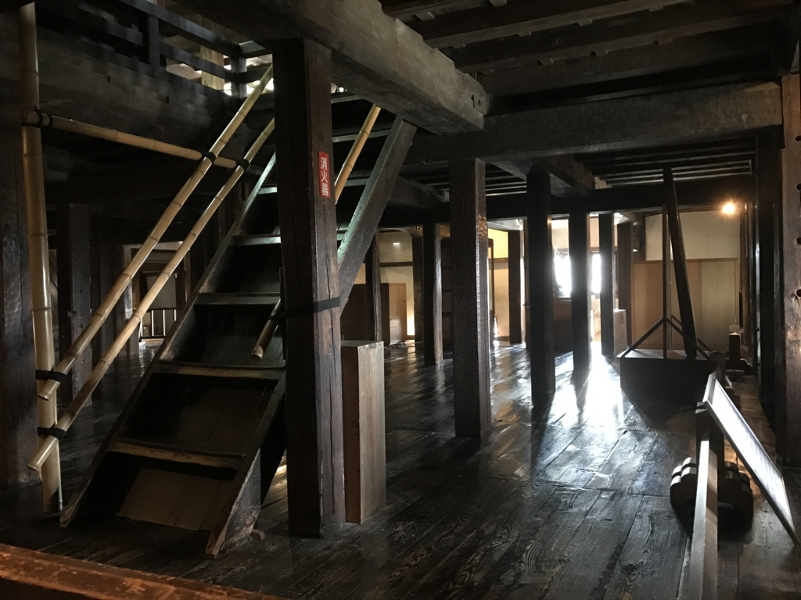
もちろん、中にも入れるやで。大天守は5重6階、北側に小天守を渡櫓で連結し、東側に辰巳附櫓・月見櫓を備えた複合＋連結式天守です。
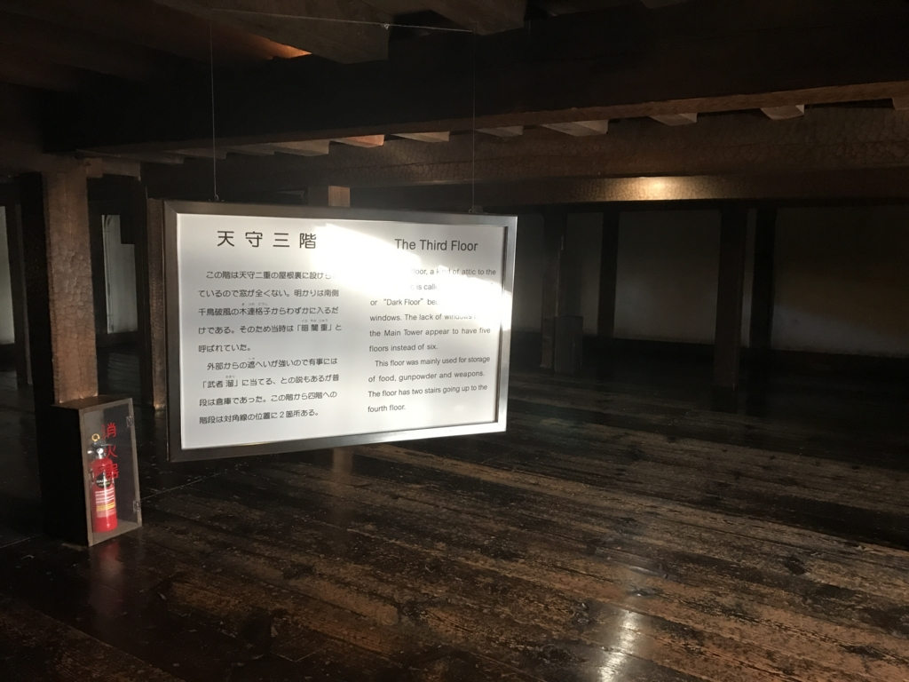
三階だけやたら天井が低かったのですが、ここはちょうど下から2番目の屋根が廻っているところなのだそう。なので窓がなく（作れない！）、普段は倉庫だったんじゃないかとか言われています。
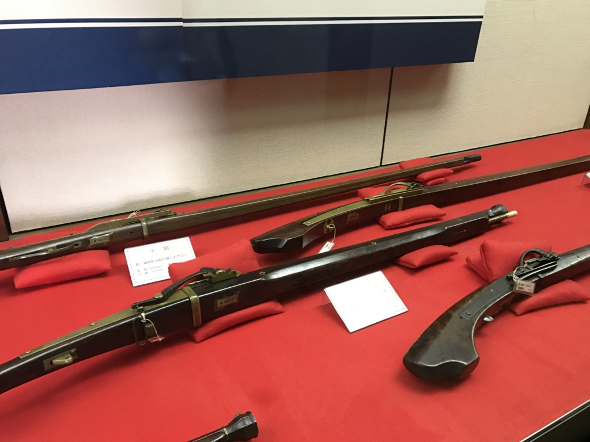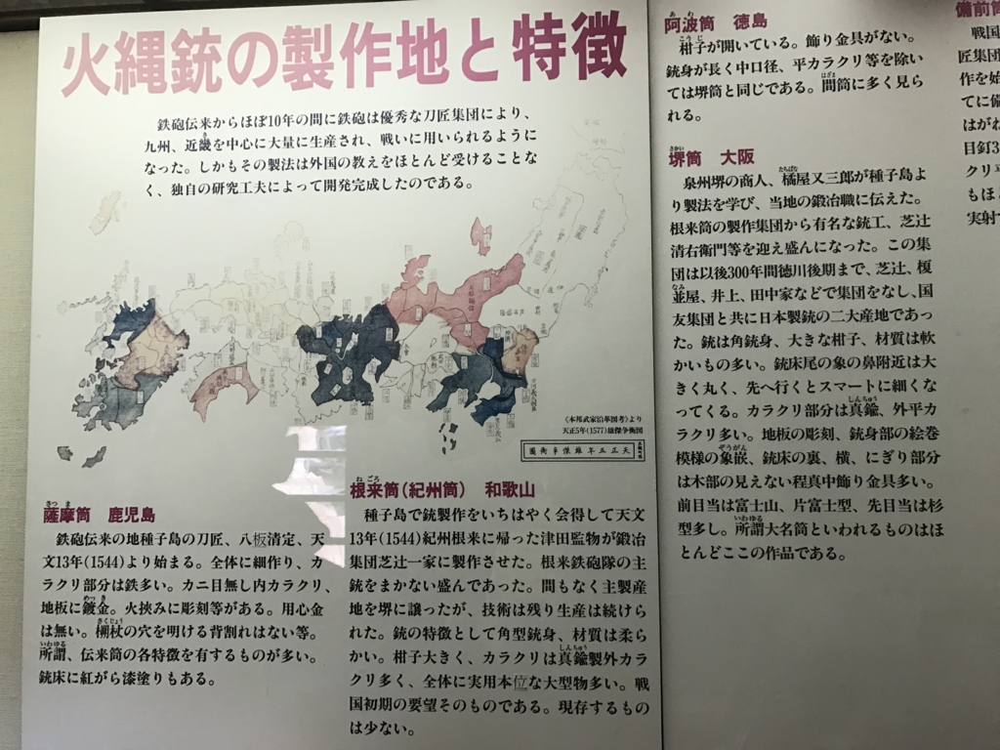
なかの展示は、妙に鉄砲関係が多い。銃やそのカラクリだけでなく、弾丸や火薬を作るための道具も展示してあるので割とお勉強になったかも。初めて見たわ～
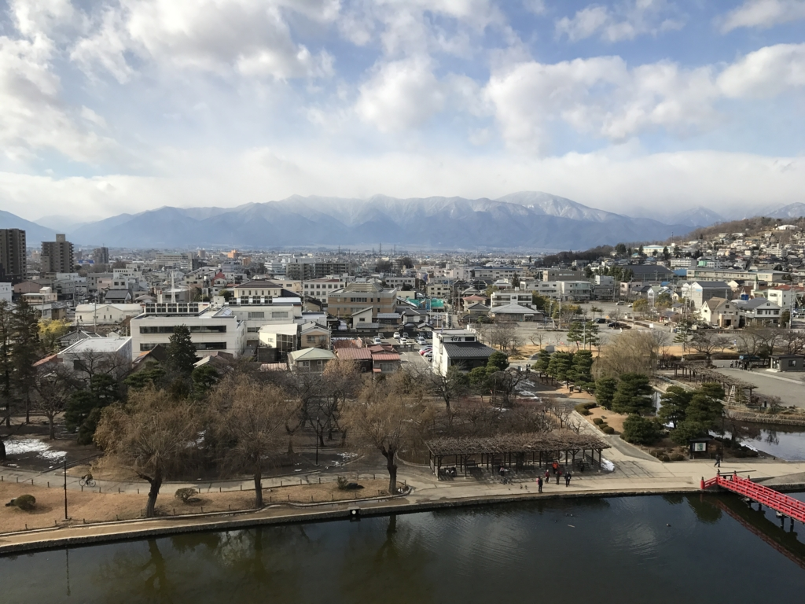
天守最上階からは乗鞍岳や槍ヶ岳といった名峰が一望できます。なんか空気がうめぇ……。
グルメ
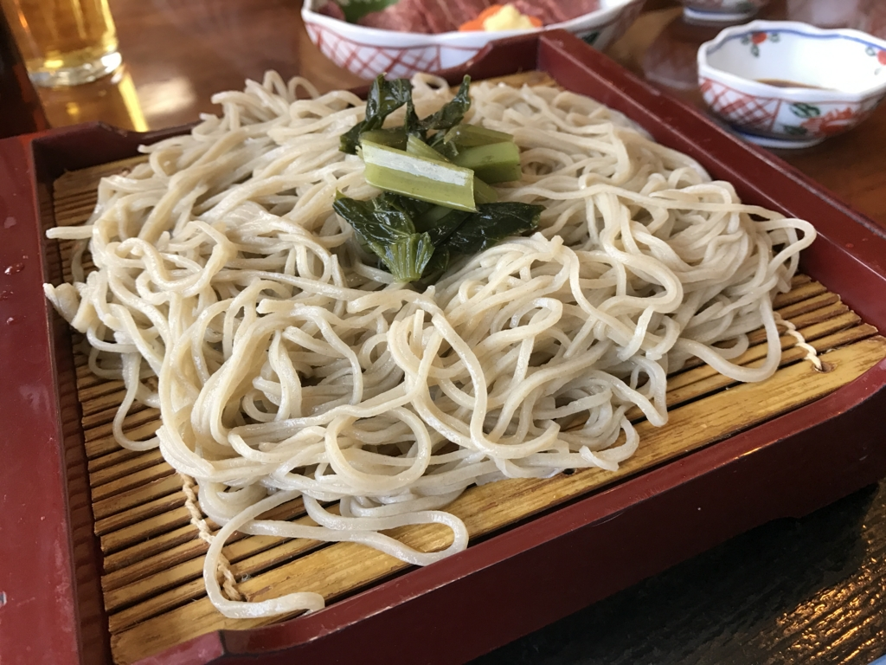
お昼ご飯は、近所の「そば庄」さんでいただきました。正直、そばの味には疎いのですが、大好きな辛味大根で食べられたのはうれしかったです。ワサビよりバシッと辛くておいしー。このあたりは美味しいお蕎麦屋さんが多いみたいなので、色々探索してみるといいと思います。
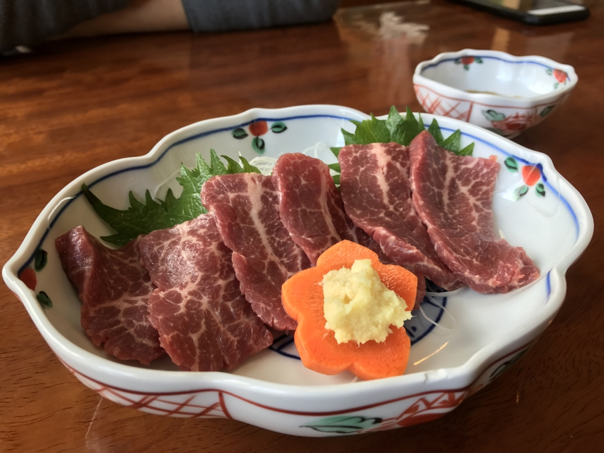
あと、馬刺しもいっちゃいました。信州といえば、馬刺し！（なのかな？ むかし善光寺で食べまくった記憶があって、なんとなく長野≒馬刺しのイメージだわ） 真昼間からビールも飲めて幸せでした（行きは運転頑張ったもんね！ 疲れるししょうがないよね！）。